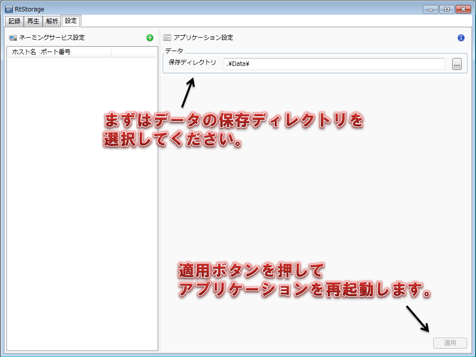
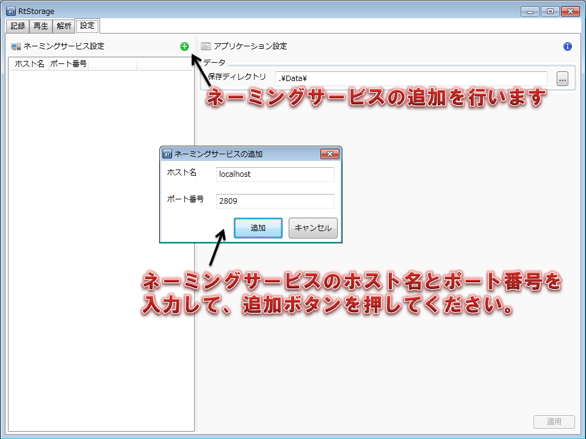
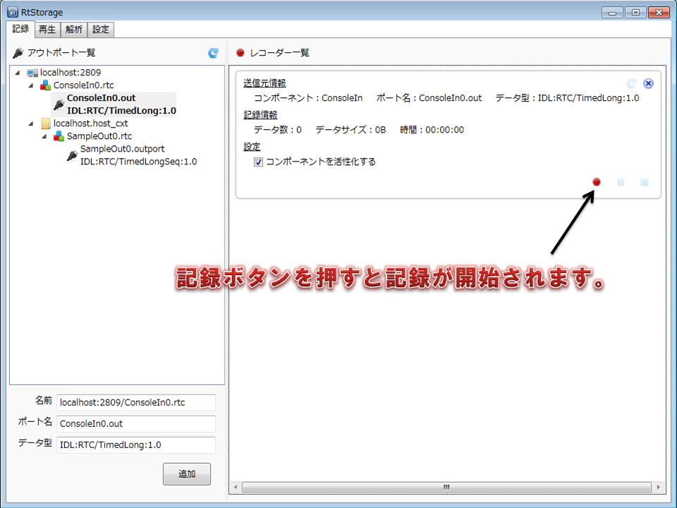
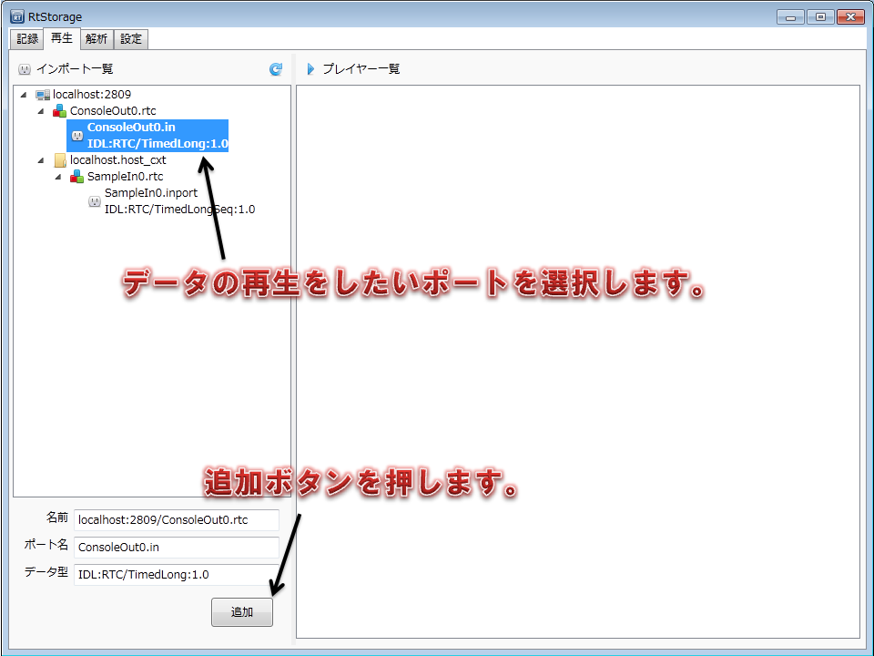
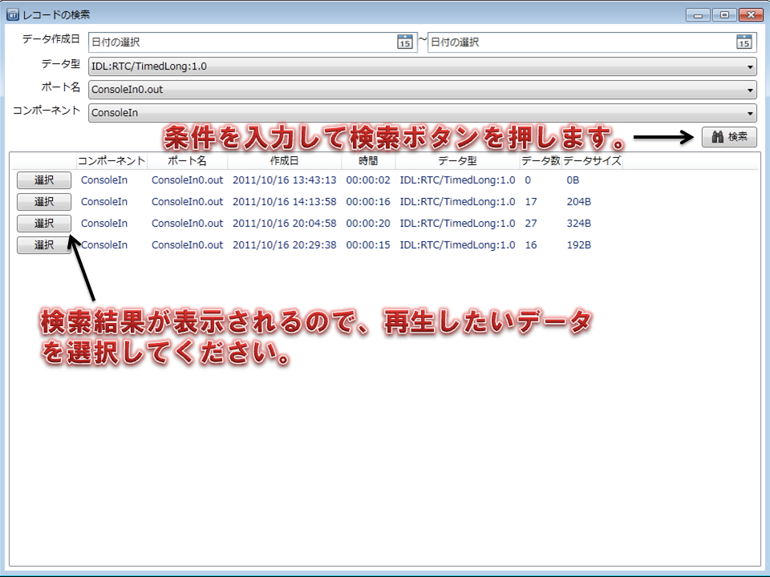
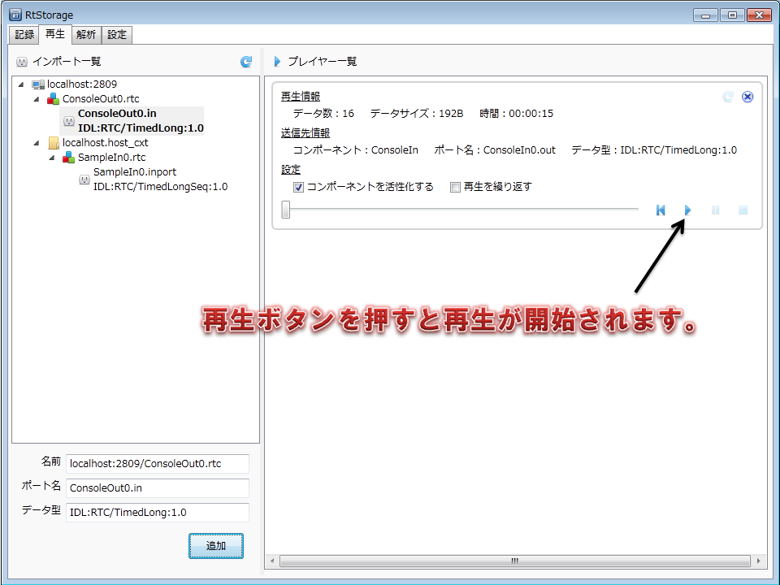

使い方¶
インストーラでインストールした場合は、Windowsのスタートメニューから、RtStorageを起動してください。
zipファイルを展開した場合は、RtStrage/bin/RtStorage.exeを起動してください。

設定¶
まずは設定タブに切り替えて、アプリケーションの設定をしましょう。
図のようにデータ保存ディレクトリを設定します。 データの保存ディレクトリは、RTコンポーネントから出力されたデータを保存するディレクトリです。
設定を反映させるためには、一度アプリケーションを再起動する必要があります。
次にネーミングサービスの設定を行います。
ネーミングサービスの追加ボタンを押し、RTコンポーネントが登録されているネーミングサービスのホスト名とポート番号を設定してください。
記録¶
記録画面に切り替えると、ネーミングサービスに登録されているRTコンポーネントのアウトポートの一覧がツリー形式で表示されます。
データを記録したいアウトポートを選択し、左下の追加ボタンを押してください。

追加ボタンを押すと、画面の右側にレコーダーの操作パネルが現れます。 データの記録を開始したいタイミングで、記録ボタンを押してください。
「コンポーネントを活性化する」にチェックを入れておくと、記録ボタンを押したタイミングでコンポーネントが自動的に活性化されます。
再生¶
再生画面に切り替えると、ネーミングサービスに登録されているRTコンポーネントのインポートの一覧がツリー形式で表示されます。
データを再生したいインポートを選択し、左下の追加ボタンを押してください。
追加ボタンを押すと、データの検索画面が表示されます。
検索条件を指定して検索ボタンを押すと、検索結果が表示されるので、再生したいデータを選択してください。
データを選択すると、画面の右側にプレイヤーの操作パネルが現れます。 データの再生を開始したいタイミングで、記録ボタンを押してください。
「コンポーネントを活性化する」にチェックを入れておくと、再生ボタンを押したタイミングでコンポーネントが自動的に活性化されます。
「再生を繰り返す」にチェックを入れると、再生が完了したときに最初から再生を繰り返します。
また、スライドバーを操作することで、再生データの再生位置を任意の位置に変更することができます。
